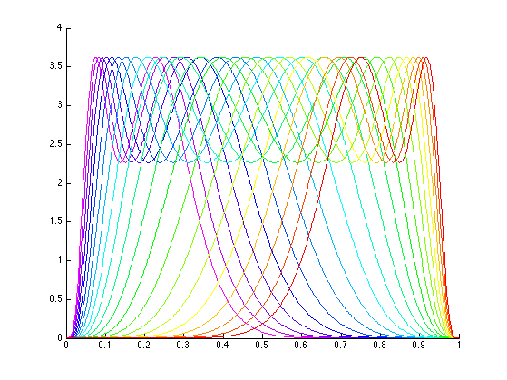
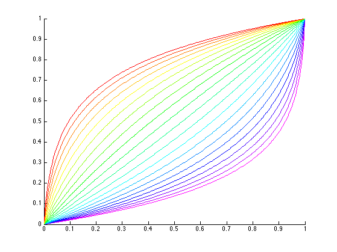
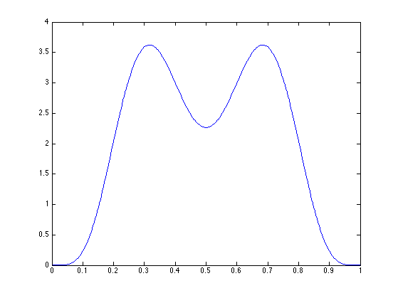
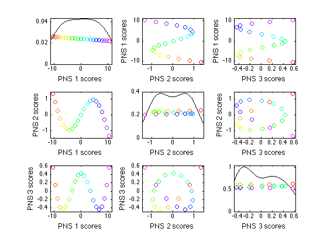
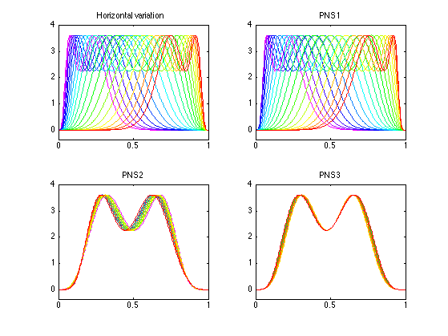

Contents
set up
clear;
addpath 'PNS' -end ;
addpath 'PNS/subfunctions' -end ;
addpath 'function_SM' -end ;
addpath 'function_SM/AllSmoothingCombined' -end ;
addpath 'functions' -end ;
make data: f and gamma
d = 300;
n = 21;
warpRange = 5;
b = 3;
gamI = zeros(d,n);
a = linspace(-warpRange,warpRange,n+1); a = a(a~=0);
t = linspace(-b,b,d);
for i = 1:n;
if a(i)~=0;
gamI(:,i) = ((2*b)*(exp(a(i)*(t+b)/(2*b))-1)/(exp(a(i))-1)-b);
else gamI(:,i) = t;
end;
end;
t = (t+b)/(2*b);
gamI = (gamI+b)/(2*b);
meanf = (betapdf(t,6,12)+ betapdf(t,12,6))';
f = zeros(d,n);
for i = 1:n;
f(:,i) = interp1(t, meanf, (t(end)-t(1)).*gamI(:,i)+ t(1));
gam(:,i) = invertGamma(gamI(:,i));
end;
specify color
nfifth = ceil((n - 1) / 5) ;
del = 1 / nfifth ;
vwt = (0:del:1)' ;
colmap = [flipud(vwt), zeros(nfifth+1,1), ones(nfifth+1,1)] ;
colmap = colmap(1:size(colmap,1)-1,:) ;
colmap = [colmap; ...
[zeros(nfifth+1,1), vwt, ones(nfifth+1,1)]] ;
colmap = colmap(1:size(colmap,1)-1,:) ;
colmap = [colmap; ...
[zeros(nfifth+1,1), ones(nfifth+1,1), flipud(vwt)]] ;
colmap = colmap(1:size(colmap,1)-1,:) ;
colmap = [colmap; ...
[vwt, ones(nfifth+1,1), zeros(nfifth+1,1)]] ;
colmap = colmap(1:size(colmap,1)-1,:) ;
colmap = [colmap; ...
[ones(nfifth+1,1), flipud(vwt), zeros(nfifth+1,1)]] ;
plot data
figure(1);
hold on ;
for i=1:n
plot(t,f(:,i),'-','Color',colmap(i,:)) ;
end
hold off
figure(2);
hold on ;
for i=1:n
plot(t,gam(:,i),'-','Color',colmap(i,:)) ;
end
hold off
axis([0,1,0,1])
figure(3);
plot(t,meanf)
  
horizontal analysis
figure(4);
inputstruct = struct( 'gam',gam,...
'meanf',meanf,...
't',t,...
'colmap',colmap, ...
'npns',3) ;
curvepnsLXS(inputstruct)
figure(5);
inputstruct = struct( 'gam',gam,...
'meanf',meanf,...
't',t,...
'colmap',colmap, ...
'plotType',2,...
'npns',3) ;
curvepnsLXS(inputstruct)
Message from PNSmain.m; dataset is on 298-sphere.
.. found null space of dimension 278,to be trivially reduced.
.. then narrow down to 20-sphere
Message from PNSmain.m; dataset is on 298-sphere.
.. found null space of dimension 278,to be trivially reduced.
.. then narrow down to 20-sphere
 